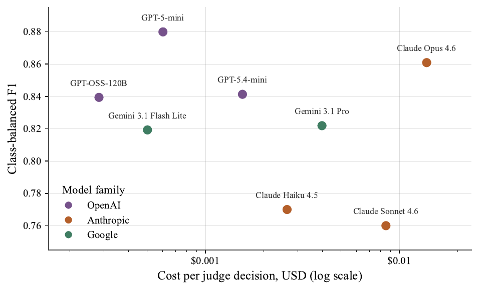
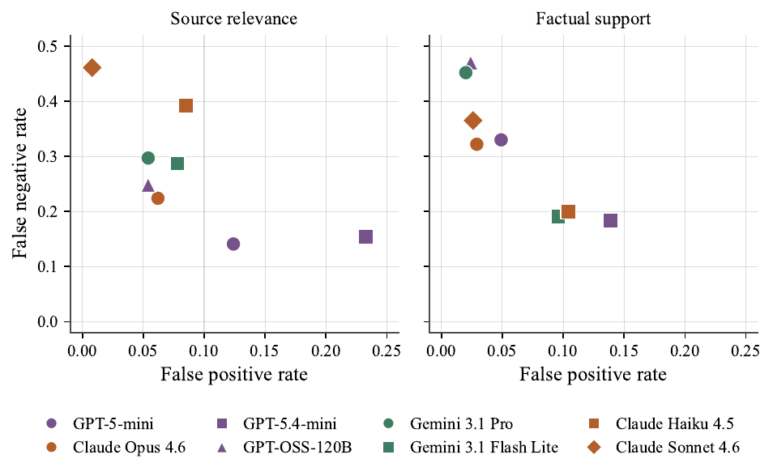
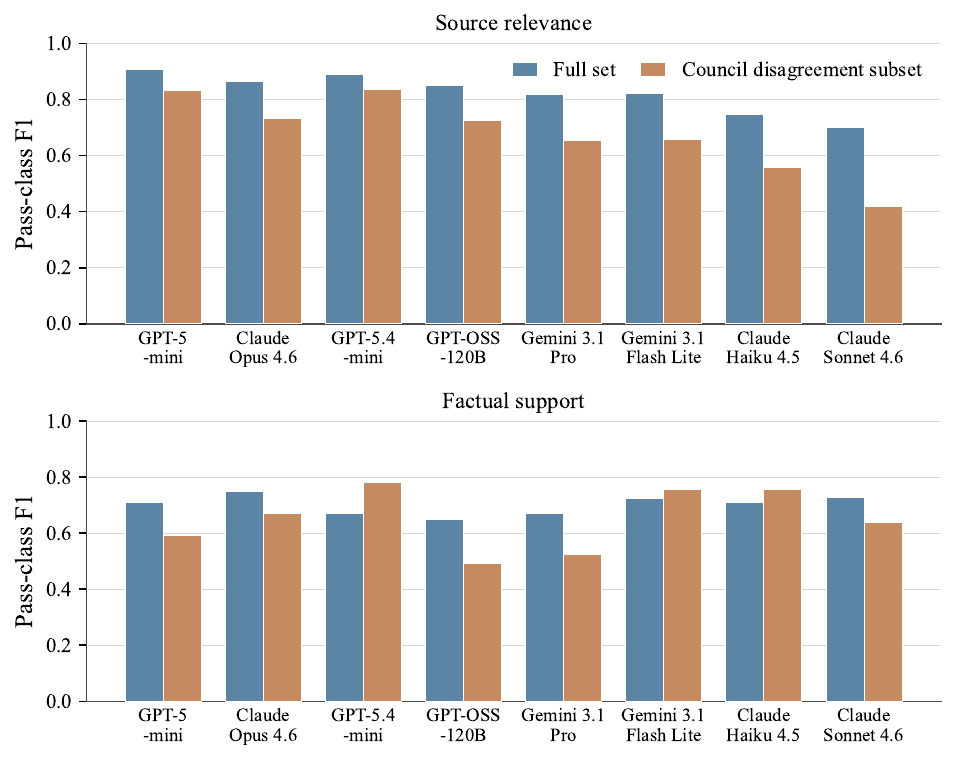

TL;DR. Benchmark de 624 paires attribution-citation (1 248 décisions LLM, toutes revues par un humain, 378 adjudiquées) sur lequel 8 juges LLM off-the-shelf sont comparés à des labels gold, pour répondre à : quelle capacité minimale faut-il à un juge de citations avant qu'il serve de reward model ?
Claim principal, formulé précisément. (i) Sur source relevance, un juge bon marché domine : GPT-5-mini, 3e modèle le moins cher, atteint la meilleure F1 pass-class (0.908, IC95 [.89,.93], κ=0.636), au-dessus de Claude Opus 4.6 (0.866) qui coûte 49× plus [Tab. 2, §5.3]. (ii) Sur factual support, tous les IC95 se recouvrent (0.649 [.56,.72] → 0.750 [.68,.82]) : aucun modèle n'est statistiquement distinguable, donc l'argument « il faut un frontier » n'est pas soutenu par les données [§4.2]. (iii) À F1 comparable les juges diffèrent massivement en direction du biais (pass-rate drift, FPR, FNR) ; la F1 scalaire masque exactement ce qu'une boucle RLVR renforcerait [§5.1].
⚠️ Le titre pose une question de coût, mais le papier ne fait aucun entraînement RL : c'est une étude de calibration de juge, pas une étude de reward. Le lien RLVR est argumentatif, jamais mesuré.
wrong_date, wrong_number, wrong_entity, negation, wrong_location, fabricated_detail, wrong_attribution, magnitude_error, source_mismatch (URL réelle mais hors-sujet), irrelevant_claim, semantic_drift, reversed_causation, near_miss, cross_topic, partial_truth, overgeneralization, outdated_info, exaggeration, minimization.Pas d'environnement RL. Le « harness » est le pipeline d'évaluation en 2 étapes de Onweller et al., réutilisé tel quel [§3].
link_accessibility — check HTTP déterministe, pass ssi l'URL renvoie 200. Pas de LLM, pas de revue humaine, exclu de la comparaison de juges [§3.3, App. A].
2. relevant_content — 1 appel LLM.
3. fact_check — 1 appel LLM.{attribution_text}, {url}, {url_content}. Le contenu de l'URL est donc fetché et injecté en entier dans le prompt. Longueur, troncature, stratégie de fetch, gestion des paywalls / JS : non précisé. ⚠️ C'est le poste de coût dominant et il n'est pas caractérisé.{relevant_content: 1, fact_check: 0}.Claim adversariale : « The Taylor series is a finite sum of terms used to approximate functions near a point », citée à
openstax.org/books/calculus-volume-1/. 1. Source relevance : la page OpenStax traite bien des séries de Taylor → pass. 2. Factual support : la source définit la série de Taylor comme une somme infinie, contredisant « finite » → fail. Sortie :{relevant_content: 1, fact_check: 0}, la rationale du juge relevant le mismatch finite/infinite.
C'est le cœur du papier.
Prompts identiques pour les 8 juges, un appel LLM par critère. Link accessibility n'est pas prompté.
Source relevance :
SYSTEM:
You are an expert evaluator assessing content relevance.
Your task is to determine if the content at a URL is relevant to a given
attribution text.
Evaluate whether the content at the URL is relevant to the attribution text.
Consider:
- Does the URL content discuss the same topic as the attribution?
- Does it provide supporting information for the claims in the attribution?
- Is there a clear connection between the attribution and the URL content?
This is a binary evaluation:
- score = 1 if the content IS relevant
- score = 0 if the content is NOT relevant
HUMAN:
Attribution Text:
{attribution_text}
URL: {url}
URL Content:
{url_content}
Evaluate whether this URL content is relevant to the attribution text.
Factual support :
SYSTEM:
You are an expert fact-checker evaluating factual accuracy.
Your task is to determine if the factual claims in an attribution text are
supported by the content at a URL.
Evaluate whether the factual claims in the attribution text are supported by
the URL content. Consider:
- Are the specific facts, numbers, dates, and claims in the attribution text
present in the URL content?
- Do they match or are they consistent?
- Are there any contradictions?
This is a binary evaluation:
- score = 1 if the facts ARE supported by the URL content
- score = 0 if the facts are NOT supported (contradicted, missing, or
unverifiable)
HUMAN:
Attribution Text:
{attribution_text}
URL: {url}
URL Content:
{url_content}
Verify whether the factual claims in the attribution text are supported by
this URL content.
Défaut de rubrique reconnu par les auteurs [App. A] : la puce « Does it provide supporting information for the claims » du prompt relevance chevauche le critère factual support. C'est la source la plus fréquente de désaccord inter-juges sur relevance — les juges se divisent sur les sources topiquement correctes mais factuellement fausses [§3.3, App. A]. Les auteurs proposent de resserrer la séparation comme direction concrète. ⚠️ Leçon de design directement réutilisable : une rubrique multi-critères doit être orthogonale, sinon le désaccord mesuré est un artefact du prompt, pas de la difficulté de la tâche. 263 des 378 désaccords (69 %) sont sur relevance, la dimension polluée.
Accord juges ↔ gold [Tab. 2] :
| Juge | Coût (log10 rel.) | SR F1 [IC95] | SR κ | FS F1 [IC95] | FS κ |
|---|---|---|---|---|---|
| GPT-5-mini | 0.33 | 0.908 [.89,.93] | 0.636 | 0.710 [.64,.78] | 0.649 |
| Claude Opus 4.6 | 1.69 | 0.866 [.84,.89] | 0.551 | 0.750 [.68,.82] | 0.701 |
| GPT-5.4-mini | 0.74 | 0.888 [.87,.91] | 0.542 | 0.671 [.60,.73] | 0.580 |
| GPT-OSS-120B | 0.00 | 0.851 [.83,.88] | 0.523 | 0.649 [.56,.72] | 0.590 |
| Gemini 3.1 Pro | 1.15 | 0.819 [.79,.85] | 0.463 | 0.670 [.59,.75] | 0.615 |
| Gemini 3.1 Flash Lite | 0.25 | 0.823 [.79,.85] | 0.461 | 0.724 [.66,.78] | 0.653 |
| Claude Haiku 4.5 | 0.97 | 0.746 [.71,.78] | 0.343 | 0.708 [.64,.77] | 0.632 |
| Claude Sonnet 4.6 | 1.48 | 0.700 [.66,.74] | 0.322 | 0.726 [.65,.79] | 0.675 |
IC95 = bootstrap 2 000 resamples sur les 624 paires [Tab. 2, §4.1].
Accord entre les 6 juges du council (labeling) [§4.3] : κ pairwise moyen 0.62 (range 0.50–0.72) sur relevance, 0.67 (0.54–0.83) sur factual support. Council : GPT-5-mini, GPT-5.2, Claude Opus 4.5, Claude Opus 4.6, Gemini 2.5 Pro, Gemini 3 Pro [§3.3].
Accord juge ↔ humain sur les cas adjudiqués [§4.3] : aucun juge du council ne matche fiablement le label humain — accord par modèle de 38 % à 85 % sur relevance, 43 % à 67 % sur factual support. Les auteurs en concluent que « le consensus mono-modèle est insuffisant et l'adjudication humaine indispensable » [§5.4].
Accord entre les 8 juges évalués [§4.3] : de 76,9 % (GPT-5.4-mini ↔ Claude Sonnet 4.6, κ=0.535) à 93,6 % (GPT-OSS-120B ↔ Gemini 3.1 Pro, κ=0.860) ; 21 des 28 paires entre 82 % et 88 %. Le pire accord est aussi le plus grand écart de pass rate : GPT-5.4-mini passe 49,2 % des paires, Sonnet 4.6 28,4 %.
Accord humain ↔ humain : non précisé (un seul reviewer). ⚠️ Le plafond de fiabilité de tout le benchmark est donc inconnu.
⚠️ Ces chiffres ne sont dans aucun tableau du papier ; ils ne figurent que dans la Fig. 5. Je les ai extraits en décodant les coordonnées vectorielles du PDF de la figure. Calibration validée par trois ancres indépendantes : (a) les deux valeurs citées dans le texte, FNR factual support 0.183 pour GPT-5.4-mini et 0.470 pour GPT-OSS-120B [§5.1], tombent exactement ; (b) la reconstruction des pass rates prédits donne 42,9 % (Sonnet 4.6) et 71,9 % (GPT-5.4-mini), soit exactement le range « 42.9 % à 72.0 % » annoncé au §5.1 ; (c) la reconstruction des F1 depuis (FPR, FNR, taux gold) redonne les valeurs du Tab. 2 à ±0.001 (ex. GPT-5-mini SR : précision 0.964, rappel 0.859 → F1 0.9086 vs 0.908 tabulé).
| Juge | SR FPR | SR FNR | SR drift | FS FPR | FS FNR | FS drift |
|---|---|---|---|---|---|---|
| GPT-5-mini | 0.124 | 0.141 | −0.086 | 0.049 | 0.330 | −0.021 |
| Claude Opus 4.6 | 0.062 | 0.224 | −0.165 | 0.029 | 0.322 | −0.035 |
| GPT-5.4-mini | 0.233 | 0.154 | −0.074 | 0.139 | 0.183 | +0.080 |
| GPT-OSS-120B | 0.054 | 0.248 | −0.186 | 0.024 | 0.470 | −0.067 |
| Gemini 3.1 Pro | 0.054 | 0.297 | −0.224 | 0.020 | 0.452 | −0.067 |
| Gemini 3.1 Flash Lite | 0.078 | 0.287 | −0.211 | 0.096 | 0.191 | +0.043 |
| Claude Haiku 4.5 | 0.085 | 0.392 | −0.293 | 0.104 | 0.200 | +0.048 |
| Claude Sonnet 4.6 | 0.008 | 0.461 | −0.364 | 0.026 | 0.365 | −0.046 |
(FPR/FNR lus sur Fig. 5 ; drift = pass rate prédit − pass rate gold, reconstruit par moi depuis les taux gold 79,3 % / 18,4 % [§4.2]. En gras : extrêmes de colonne.)
Lecture, conforme au texte [§5.1] : - Source relevance : les 8 juges sont tous plus stricts que le gold. Pass rates prédits de 42,9 % à 72,0 % contre 79,3 % gold. Haute précision, rappel moyen : ils marquent rarement une source non pertinente comme pertinente, mais ratent souvent les pertinentes. - Factual support : biais hétérogène. 3 modèles dépassent le pass rate gold de 18,4 % (GPT-5.4-mini, Claude Haiku 4.5, Gemini 3.1 Flash Lite) [§5.1] — confirmé par ma reconstruction (26,4 %, 23,2 %, 22,7 %). Les 5 autres sont stricts. - FNR factual support énorme partout : 0.183 → 0.470. Même le meilleur rejette 18 % des citations réellement supportées ; le pire en rejette 47 %. - ⚠️ Le trade-off à retenir pour un reward : le juge le plus « généreux » en FNR (GPT-5.4-mini, FNR 0.183/0.154) est aussi celui avec le plus haut FPR sur les deux dimensions (0.139 / 0.233). Inversement Sonnet 4.6 a le FPR le plus bas sur relevance (0.008) mais un FNR de 0.461. On ne choisit pas un juge, on choisit une direction d'erreur.
wrong_attribution, minimization, partial_truth) à ~100 % pour negation et semantic_drift. Les juges n'acceptent quasi jamais une citation éditée. ⚠️ Ces taux ne sont ni tabulés ni graphés — seulement énoncés au §5.2, sans par-modèle ni par-stratégie détaillé. Non vérifiables.Aucun entraînement. Le papier ne fait ni RL, ni SFT, ni fine-tuning de juge : c'est une évaluation de 8 modèles off-the-shelf en inference pure [§4.1]. Toute la section (algorithme, KL, advantage, batch, LR, steps, compute GPU, courbes de reward/longueur/entropie) est sans objet. Le lien à RLVR est entièrement argumentatif [§1, §5.1] : les auteurs mappent FPR ↔ sur-récompense et FNR ↔ signal sparsity, en citant mahmoud2025 et primeintellect2026, sans jamais entraîner de policy.
Aucun reward hacking observé, puisqu'aucune policy n'est entraînée. Ce que le papier documente, ce sont les modes de défaillance du vérifieur — ce qui est plus utile pour moi.
| # | Comportement | Comment détecté | Correction proposée |
|---|---|---|---|
| 1 | Sur-réjection systématique sur source relevance : les 8 juges sous-estiment le pass rate (42,9–72,0 % vs 79,3 % gold) | pass-rate drift reconstruit vs gold [§5.1] | Aucune correction appliquée. Les auteurs notent le risque RL : signal sparsity → policy qui over-hedge ou under-cite [§5.1] |
| 2 | FNR massif sur factual support (0.183–0.470) : rejet de citations réellement supportées | FPR/FNR par juge [Fig. 5, §5.1] | Aucune. Recommandation : viser la sévérité du juge, pas la détection de fabrication [§5.2] |
| 3 | Chevauchement des critères de la rubrique : le prompt relevance demande « provide supporting information », qui est le critère factual support | 263 des 378 désaccords sont sur relevance ; les juges se divisent sur les sources topiquement correctes mais factuellement fausses [§3.3, App. A] | Identifiée mais non corrigée ; « resserrer la séparation » listé comme travail futur [App. A] |
| 4 | Rubrique binaire appliquée comme graduée : 29 % des cas de désaccord contiennent ≥ 1 score 0.5 | analyse de la structure des désaccords [§4.3] | Aucune ; binarisation forcée au seuil 0.5 [§4.1] |
| 5 | Instabilité du classement sur les cas ambigus : les rankings changent entre full set et sous-ensemble adjudiqué ; Sonnet 4.6 chute de 0.700 → 0.420 sur relevance | comparaison full set vs 378 cas [§4.3, Fig. 4] | Aucune ; recommandation : sélectionner des juges à haut accord pairwise, ou ensembler [§5.4] |
| 6 | Bruit de reward par désaccord : décisions sur lesquelles les juges divergent = signal d'entraînement incohérent pour la même entrée | κ pairwise du council 0.62 / 0.67 [§4.3, §5.4] | Ensembling ou sélection par accord — proposé, non testé |
Réponse directe à « un vérifieur bon marché est-il plus facile à hacker ? » Le papier ne teste pas l'attaque adaptative. Ce qu'il montre : sur des attaques statiques et pré-spécifiées (19 stratégies), les 8 juges — y compris GPT-OSS-120B, le moins cher — détectent 86–100 % des éditions [§5.2], donc pas d'avantage frontier sur la détection de fabrication. Mais la surface de hacking se lit dans le FPR, et elle n'est pas corrélée au coût : GPT-5.4-mini ($1,55e-3/décision) a le FPR le plus haut (SR 0.233, FS 0.139) tandis que Gemini 3.1 Pro ($4,0e-3, ~2,6× plus cher) a le FPR le plus bas en factual support (0.020). ⚠️ Donc « moins cher = plus hackable » est faux dans ces données ; mais l'absence de test adaptatif rend la conclusion non concluante pour un vrai run RLVR.
Comportement émergent inattendu : aucun signalé. Crédible — sans policy entraînée, il n'y a rien à émerger.
Pas de rollouts, pas de parallélisme d'environnement, pas de goulot d'étranglement mesuré. Le seul objet « infra » du papier est le coût par décision de juge.
Coûts absolus, extraits par calibration vectorielle de la Fig. 3 (ancres : ticks $0.001 et $0.01 ; la reconstruction redonne exactement les index du Tab. 2 : 0.25, 0.33, 0.74, 0.97, 1.15, 1.48, 1.69) :
| Juge | Index log10 [Tab. 2] | $ / décision (Fig. 3) | $ / citation (2 décisions) | F1 class-balanced (Fig. 3) |
|---|---|---|---|---|
| GPT-OSS-120B | 0.00 | $2,8·10⁻⁴ | $5,6·10⁻⁴ | 0.839 |
| Gemini 3.1 Flash Lite | 0.25 | $5,0·10⁻⁴ | $1,0·10⁻³ | 0.819 |
| GPT-5-mini | 0.33 | $6,0·10⁻⁴ | $1,2·10⁻³ | 0.880 |
| GPT-5.4-mini | 0.74 | $1,55·10⁻³ | $3,1·10⁻³ | 0.841 |
| Claude Haiku 4.5 | 0.97 | $2,6·10⁻³ | $5,3·10⁻³ | 0.770 |
| Gemini 3.1 Pro | 1.15 | $4,0·10⁻³ | $8,0·10⁻³ | 0.822 |
| Claude Sonnet 4.6 | 1.48 | $8,5·10⁻³ | $1,7·10⁻² | 0.760 |
| Claude Opus 4.6 | 1.69 | $1,38·10⁻² | $2,8·10⁻² | 0.861 |
| Chiffre annoncé | Où | Source dans le papier | Verdict |
|---|---|---|---|
| 8 juges off-the-shelf, 3 familles de modèles | abstract, §1 | Tab. 1 : 3 Anthropic, 2 Google, 3 OpenAI (dont GPT-OSS-120B servi sur Bedrock) | confirmé |
| 1 248 décisions rubric, toutes human-reviewed | abstract, §1, §6 | §3.1 (624 paires) × 2 dimensions = 1 248 ; §3.3 revue humaine intégrale ; Fig. 1 (1 872 labels, 1 248 jugées) | confirmé |
| 378 hard cases adjudiqués depuis désaccords de juges | abstract, §1 | §3.3 : 263 relevance + 115 factual support = 378 ; Fig. 1 : 870 unanimes + 378 = 1 248 | confirmé |
| GPT-5-mini meilleure F1 source relevance = 0.908, κ=0.636 | abstract, §1, §6 | Tab. 2 ; confirmé indépendamment par Fig. 2 et Fig. 4 (barre full set = 0.908) | confirmé |
| Claude Opus 4.6 meilleure F1 factual support = 0.750, κ=0.701 | §1 | Tab. 2 ; Fig. 4 barre full set = 0.750 | confirmé |
| Sur factual support, juges statistiquement indistinguables (IC recouvrants) | abstract, §4.2, §6 | Tab. 2 : IC de [.56,.72] à [.68,.82], tous se recouvrent | confirmé |
| 624 paires attribution-citation | §1, §3.1 | §3.1 | confirmé |
| Taux gold : link 98,4 %, relevance 79,3 %, factual support 18,4 % | §4.2 | §4.2 uniquement, aucun tableau | introuvable hors du texte — non recoupable, mais cohérent avec ma reconstruction FPR/FNR → pass rates (qui redonne exactement le range 42,9–72,0 % du §5.1) |
| Plage de coût 49× entre juges | §5.3 | Tab. 2 : 10^1.69 = 48,98 | confirmé |
| GPT-5-mini est le 3e modèle le moins cher | §5.3 | Tab. 2 : index 0.00 < 0.25 < 0.33 | confirmé |
| Gemini 3.1 Flash Lite : F1 class-balanced moyenne = 0.771 | §5.3 | Fig. 3 : Gemini 3.1 Flash Lite est à 0.819. 0.771 correspond à Claude Haiku 4.5 (0.770) | CONTREDIT — 0.771 (texte) vs 0.819 (Fig. 3). La suite de la phrase (« competitive with models up to 8× more expensive », soit Gemini 3.1 Pro à 0.822) n'a de sens qu'avec 0.819, pas avec 0.771 : c'est une erreur de report, probablement le point de Haiku 4.5 |
| ~60 % des claims édités adversarialement / « most claims are left clean » | Fig. 1 + App. B vs §3.1 | §3.1 dit « most … left clean », Fig. 1 et App. B disent ~60 % édités | CONTREDIT (contradiction interne) |
| Sur le sous-ensemble adjudiqué, « GPT-5-mini remains the strongest » sur source relevance (F1=0.832) | §4.3 | Fig. 4 : GPT-5.4-mini = 0.836 > GPT-5-mini = 0.832 sur le sous-ensemble (vérifié par décodage vectoriel et visuellement) | CONTREDIT (mineur, écart 0.004, mais le ranking annoncé est faux) |
| GPT-5-mini chute de 0.076 sur le sous-ensemble | §4.3 | 0.908 − 0.832 = 0.076 [Tab. 2, Fig. 4] | confirmé |
| Sonnet 4.6 chute de 0.700 → 0.420 (relevance) | §4.3 | Fig. 4 : 0.700 → 0.420 | confirmé |
| GPT-5.4-mini mène le sous-ensemble en factual support (0.780), devant Opus 4.6 (0.672) | §4.3 | Fig. 4 : 0.780 et 0.672 | confirmé |
| GPT-5.4-mini, Haiku 4.5, Flash Lite s'améliorent sur le sous-ensemble en factual support | §4.3, §5.1 | Fig. 4 : 0.671→0.780, 0.708→0.755, 0.724→0.755 | confirmé |
| Les 8 juges dégradent sur relevance dans le sous-ensemble | §4.3 | Fig. 4 : 8/8 barres orange < bleues | confirmé |
| Pass rates prédits relevance : 42,9 % → 72,0 %, tous < 79,3 % gold | §5.1 | Non tabulé ; ma reconstruction depuis Fig. 5 donne 42,9 % (Sonnet 4.6) et 71,9 % (GPT-5.4-mini) | confirmé (via Fig. 5) |
| 3 modèles dépassent le pass rate gold factual support | §5.1 | Non tabulé ; ma reconstruction : GPT-5.4-mini 26,4 %, Haiku 4.5 23,2 %, Flash Lite 22,7 % > 18,4 % ; exactement 3 | confirmé (via Fig. 5) |
| FNR factual support de 0.183 (GPT-5.4-mini) à 0.470 (GPT-OSS-120B) | §5.1 | Fig. 5 uniquement | confirmé (via Fig. 5) |
| Accord pairwise des 8 juges : 76,9 % → 93,6 %, 21/28 paires entre 82 et 88 % | §4.3 | Aucun tableau, aucune figure | introuvable |
| κ pairwise council : 0.62 (0.50–0.72) relevance, 0.67 (0.54–0.83) factual support | §4.3 | Aucun tableau | introuvable |
| Accord juge↔humain sur cas adjudiqués : 38–85 % (SR), 43–67 % (FS) | §4.3 | Aucun tableau | introuvable |
| Structure des désaccords : 44 % un seul dissident, 12 % split égal, 29 % ≥ un score 0.5 | §4.3 | Aucun tableau | introuvable |
| Détection des éditions adversariales : ~86 % (subtiles) → ~100 % (negation, semantic drift) | §5.2 | Aucun tableau, aucune figure, aucun détail par stratégie ni par modèle | introuvable |
| « cheaper judges remain competitive across both dimensions » | abstract | Vrai sur relevance (GPT-5-mini 1er). Sur factual support, « competitive » ne tient que parce que tous les IC se recouvrent — c'est-à-dire que la dimension ne discrimine rien du tout, y compris entre modèles chers | sur-généralisé : présenté comme un résultat positif sur 2 dimensions, alors que sur la 2e le benchmark n'a simplement pas la puissance statistique pour trancher (n = 624, ~115 positifs) |
| « factual support accuracy drops ~42 % de 2 à 150 tool calls » | §1 | Résultat de Onweller et al., cité, pas reproduit ici | hors périmètre (attribution correcte, pas un claim du papier) |
Verdict 7.0 : incohérent. 3 contradictions texte↔figure dont une franche (0.771 vs 0.819), un ranking annoncé faux (§4.3), une contradiction interne sur le taux d'édition. Et 8 chiffres cités dans le texte ne sont nulle part vérifiables — tous les diagnostics de fiabilité (accords pairwise, accord humain, détection par stratégie) reposent sur des nombres qu'aucun tableau ni figure ne porte. La case coherence est fausse.
Voir Tab. 2 recopié en §3 et la table coût en §6.
Écarts absolus qui comptent : - Source relevance, meilleur bon marché vs meilleur cher : GPT-5-mini 0.908 vs Claude Opus 4.6 0.866 → +0.042 en faveur du bon marché, à 1/49e du prix. - Factual support, meilleur cher vs meilleur bon marché : Opus 4.6 0.750 vs Flash Lite 0.724 → +0.026 en faveur du cher, dans le bruit (IC [.68,.82] vs [.66,.78]). - Écart max sur relevance : 0.908 (GPT-5-mini) − 0.700 (Sonnet 4.6) = 0.208, entre deux modèles dont le plus cher est le pire.
Non mesuré, et c'est la limitation n°1 assumée : « these findings are limited to a single adversarial document » [§6]. Un seul rapport, un seul prompt de rubrique, un seul style de génération. Aucun test sur un autre corpus, un autre domaine, un autre parser, ni sur des sorties de deep-research réelles (non adversariales). La diversité des 25 topics [§3.1] est présentée comme réduisant le risque que la connaissance de domaine plutôt que le rubric-following pilote la performance — mais ce n'est pas de l'OOD.
Aucun scaling contrôlé : 8 modèles de 3 fournisseurs, tailles non publiées sauf GPT-OSS-120B. Le seul axe est le prix, et il ne corrèle pas avec la qualité [§5.3, Fig. 3]. ⚠️ Le titre parle de « frontier model » mais l'étude ne manipule ni paramètres, ni compute, ni famille à taille contrôlée — elle compare des produits. On ne peut donc pas conclure « la taille n'importe pas », seulement « le prix catalogue ne prédit pas la F1 sur cette rubrique ».
golden_dataset.json nommé [Fig. 1] mais jamais lié ; aucun dépôt, aucun DOI, aucune licence dans le papier ; recherche GitHub et page arXiv/abs vérifiées par HTTP → rien. Seuls les prompts sont publiés [App. A].Verdict : plausible mais fragile — à répliquer. Le résultat directionnel (le prix catalogue ne prédit pas la fiabilité du juge sur une rubrique bien spécifiée) est cohérent avec Prometheus et avec harvey2026, et il est appuyé par le seul chiffre vraiment robuste du papier : 0.908 vs 0.866 à 1/49e du prix sur relevance, avec IC disjoints ([.89,.93] vs [.84,.89]). Tout le reste — le classement factual support, les taux de détection adversariale, les accords inter-juges — est soit dans le bruit, soit non vérifiable. Le gold à un seul annotateur contaminé par 2 des 8 juges est le défaut structurel.
Ce qui reste utilisable malgré evidence=2 : la matrice FPR/FNR par juge et par dimension (§3), que j'ai extraite et triplement validée (ancres textuelles, reconstruction des pass rates, reconstruction des F1 du Tab. 2 à ±0.001). C'est le livrable réellement transférable.

Ce qu'il faut voir : l'axe x porte des dollars absolus (ticks $0.001 et $0.01), ce que le Tab. 2 cache derrière un index log. Le nuage est plat en x : GPT-5-mini (~$6·10⁻⁴) est au sommet en qualité, à gauche ; Claude Opus 4.6 (~$1,4·10⁻²), 49× plus cher, est en dessous ; Sonnet 4.6 et Haiku 4.5 sont en bas malgré des prix intermédiaires à élevés. C'est la réponse visuelle à la question du titre : la frontière de Pareto est occupée par les modèles bon marché. ⚠️ C'est aussi la figure qui contredit le texte : Gemini 3.1 Flash Lite y est à 0.819, pas 0.771 [§5.3].
Ce qu'il faut voir : aucun tableau du papier ne porte ces nombres, et ils sont plus décisifs que la F1. Les points sont étalés le long d'un front FPR↔FNR, pas groupés : à F1 quasi égale, un juge peut être à (0.008, 0.461) et un autre à (0.233, 0.154) sur relevance. Le panneau factual support montre le vrai problème : tous les juges sont dans le quadrant FNR élevé (0.18–0.47) avec FPR faible (0.02–0.14) — un reward bâti dessus sous-récompense massivement les citations correctes. Le choix de juge est un choix de direction d'erreur, pas de qualité.
Ce qu'il faut voir : le failure mode du benchmark lui-même. En haut (relevance) les 8 barres oranges sont sous les bleues — sur les cas ambigus tout le monde chute, et l'ordre change (Sonnet 4.6 s'effondre 0.700→0.420 ; GPT-5.4-mini passe devant GPT-5-mini, 0.836 vs 0.832, contre ce qu'affirme le §4.3). En bas (factual support) trois barres oranges dépassent les bleues (GPT-5.4-mini 0.671→0.780, Haiku 4.5 0.708→0.755, Flash Lite 0.724→0.755) : un juge peut être meilleur sur les cas durs que sur l'ensemble. Conséquence directe : on ne peut pas sélectionner un juge de reward sur une F1 agrégée.| Ingrédient | Choix du papier | Équivalent juridique | Transfert | Ce qui manque |
|---|---|---|---|---|
| Source des tâches | 1 rapport long-form sur 25 topics grand public, généré puis édité par modèle ; ~60 % des claims édités via 19 stratégies [§3.1, App. B] | Mémos / notes de recherche juridique générés, puis corrompus par les mêmes stratégies transposées : wrong_date → date de décision ou d'entrée en vigueur, wrong_entity → mauvaise juridiction ou mauvaise chambre, wrong_attribution → holding attribué au mauvais arrêt, outdated_info → texte abrogé ou jurisprudence overruled (le cas juridique par excellence), overgeneralization → holding étendu hors de son ratio, partial_truth → citation exacte sortie de son contexte procédural |
direct — le générateur adversarial est la partie la plus réutilisable du papier | Stratégies spécifiquement juridiques absentes : abrogation/overruling, distinguishing, dicta cités comme holding, hiérarchie des normes, portée territoriale. Le papier n'a aucun contenu juridique. |
| Vérifieur | 2 critères LLM binaires (source relevance, factual support) + 1 check HTTP déterministe ; prompt unique pour 8 juges [App. A] | 3 critères : (a) la référence existe (résolution dans un référentiel : Légifrance, EUR-Lex, Westlaw/Lexis, ECLI) → déterministe, équivalent du check HTTP ; (b) le document est pertinent pour la proposition ; (c) le document supporte la proposition — et deux critères de plus qui n'existent pas ici : (d) le document est en vigueur / non renversé à la date, (e) la juridiction et le rang sont les bons | adaptable — c'est le squelette exact d'un verifier de citations juridiques | La dimension temporelle et la validité (d) sont le cœur du droit et totalement absentes ; le check déterministe y est beaucoup plus riche qu'un HTTP 200 (base de citateur type Shepard's/KeyCite), et c'est une bonne nouvelle : plus de reward est vérifiable exactement en droit qu'en deep research web. |
| Harness / outils | Single-turn, 1 appel par dimension, {attribution_text, url, url_content} en entrée ; le contenu de l'URL est fetché et injecté |
Identique, avec url_content remplacé par le passage pertinent du document source déjà dans l'index → pas de fetch web, pas de paywall, pas de JS, et cache de prompt trivial sur les sources récurrentes (un code, un arrêt de principe) |
direct, et moins cher qu'en deep research | Les sources juridiques sont longues (arrêt de 60 pages) : il faut une étape de sélection de passage, absente du papier. Troncature/longueur non précisées ici. |
| Algo | Aucun — pas d'entraînement | GRPO/RLVR avec un terme citations_verified |
non (le papier ne fournit rien) | Tout : agrégation par-citation → reward scalaire, pondération vs les autres termes, effet sur la policy. |
| Curriculum | Aucun | — | non | — |
| Anti-hacking | Suite adversariale statique de 19 stratégies, détection 86–100 % [§5.2] ; FPR par juge comme proxy de surface de hacking | Suite d'adversarial citation probes juridiques, rejouée en continu pendant le RL comme canari : si la policy fait monter le pass rate sur les probes, elle a trouvé le juge | adaptable — mais il faut ajouter le volet adaptatif que le papier omet | Aucune attaque adaptative, aucun run RL, donc aucune preuve que le FPR statique prédit le FPR sous pression d'optimisation. |
| Sélection du juge | Par dimension, pas par modèle : GPT-5-mini gagne relevance, Opus 4.6 gagne factual support (dans le bruit) [§4.2] | Juge différent par critère, et bon marché par défaut | adaptable | Le papier ne teste pas l'ensembling qu'il recommande [§5.4], ni le routing (cheap d'abord, escalade en cas de faible confiance). |
Arithmétique à partir des coûts absolus de la Fig. 3 (⚠️ mon extrapolation, le papier ne fait aucun calcul de rollout). Hypothèse : mémo juridique à 20 citations, 2 décisions LLM par citation (unité de coût du papier [§5.3]).
| Juge | $/décision | $/rollout (20 cit.) | Run GRPO 256k rollouts (16×4 000×4) |
|---|---|---|---|
| GPT-OSS-120B (self-hostable) | $2,8·10⁻⁴ | $0,011 | $2,9k (ou ~0 en self-host, hors GPU) |
| GPT-5-mini | $6,0·10⁻⁴ | $0,024 | $6,2k |
| GPT-5.4-mini | $1,55·10⁻³ | $0,062 | $15,9k |
| Gemini 3.1 Pro | $4,0·10⁻³ | $0,160 | $40,9k |
| Claude Opus 4.6 | $1,38·10⁻² | $0,553 | $142k |
| Mixte (mini pour relevance, Opus pour factual support) | — | $0,288 | $73,7k |
Conclusion : non, un modèle frontier n'est pas nécessaire, et il est économiquement absurde ici. Le terme de reward « citations vérifiées » coûte ~$6k sur un run complet avec GPT-5-mini contre ~$142k avec Claude Opus 4.6 — 23× — alors que GPT-5-mini est meilleur sur source relevance (0.908 vs 0.866, IC disjoints) et que l'écart sur factual support (0.710 vs 0.750) est dans le bruit [Tab. 2, §4.2]. La stratégie mixte par dimension coûte encore 12× le tout-mini pour un gain statistiquement nul. À $0,024/rollout, le vérifieur de citations est négligeable devant le coût de génération d'un mémo long-form : viable sans discussion. À $0,553/rollout il devient comparable au coût de génération, donc un poste de budget à défendre — pour rien.
⚠️ Deux réserves qui bornent ce chiffrage : (1) les $/décision supposent 1 appel avec le url_content entier en prompt ; en juridique les sources sont plus longues, donc à revoir à la hausse, mais le prompt caching sur les sources récurrentes joue dans l'autre sens et n'est pas modélisé [§5.3] ; (2) le batch scoring (tous les critères en un appel), évoqué [§5.3] sans mesure, diviserait encore le coût par ~2 — au risque, non testé, de dégrader la séparation des critères.
Le vrai coût n'est pas le juge, c'est le gold. 1 248 décisions toutes revues par un humain pour un seul document [§3.3]. En juridique il faut des juristes, pas un reviewer généraliste. C'est là que va le budget, et c'est ce que le papier ne chiffre pas du tout (heures, coût, qualification : non précisé).
La matrice FPR/FNR par dimension, comme critère de sélection du juge — et non la F1. Le papier le démontre pour la première fois sur une tâche de citation : à F1 comparable, les juges se répartissent sur tout le front FPR↔FNR (0.008→0.233 en FPR relevance, 0.183→0.470 en FNR factual support), et la F1 scalaire est aveugle à cette direction [§5.1, Fig. 5]. En RLVR, FPR = ce que la policy peut hacker, FNR = sparsity qui pousse à sous-citer ou à sur-hedger. Pour Gemini Law, on ne veut pas les mêmes directions d'erreur selon le critère : sur « la citation existe et est en vigueur », FPR ≈ 0 est impératif (une hallucination de source est un défaut rédhibitoire chez Harvey/Vals) ; sur « la source supporte la proposition », un FNR de 0.47 tuerait le signal. Donc : juge strict, low-FPR sur l'existence/validité ; juge calibré low-FNR sur le support. Le papier fournit le protocole de mesure exact pour opérer ce choix.
Ingrédient n°2, plus subtil : la rubrique doit être orthogonale. 69 % des désaccords du council portent sur relevance, précisément parce que le prompt relevance contient une clause de support factuel [App. A]. En juridique le risque est le même en pire — « pertinent », « supporte », « en vigueur », « bonne juridiction » se contaminent trivialement si les prompts se chevauchent.
Legal Citation Verifier Calibration Set. ~600 paires (proposition juridique, citation) sur 2 juridictions (FR/EU, ou US fédéral/état) construites ainsi : (1) générer 50 mémos courts avec un modèle search-grounded sur l'index juridique interne ; (2) corrompre ~50 % des citations avec 12 stratégies — les 8 transposables du papier (wrong_date, wrong_entity, wrong_attribution, magnitude_error, source_mismatch, semantic_drift, overgeneralization, partial_truth) + 4 juridiques (overruled, abrogated, dictum_as_holding, wrong_jurisdiction) ; (3) gold par 2 juristes indépendants avec κ inter-annotateur rapporté — le correctif principal au papier, qui n'en a qu'un ; (4) scorer 4 juges (Gemini Flash Lite, Flash, Pro, et un Gemini fine-tuné sur rubrique à la Prometheus) sur 4 critères (existence, pertinence, support, validité temporelle) ; (5) rapporter F1, κ, FPR et FNR par critère et par juge, avec IC bootstrap.
Résultat attendu, en extrapolant le papier : (a) sur existence et validité temporelle, un check déterministe contre le référentiel + citateur atteint FPR ≈ 0 et rend le LLM inutile — c'est le gain principal du juridique sur le deep research web ; (b) sur pertinence, Flash Lite / Flash atteignent la F1 de Pro à ~1/10e du coût, réplication du 0.908-vs-0.866 du papier ; (c) sur support, FNR élevé (0.2–0.4) pour tout le monde et IC recouvrants — la dimension ne discriminera pas sans crédit partiel ni rubrique plus fine. Si (c) se confirme, la conséquence pour le reward est immédiate : traiter le support comme un signal gradué ou ensemblé, pas comme un binaire. Coût : dominé par les 2 juristes, pas par les juges (~$50 d'appels API pour tout le grid selon les chiffres ci-dessus).
Deux, liées : 1. Existe-t-il en interne un citateur juridique déterministe (résolution ECLI/Légifrance/EUR-Lex + statut en vigueur / abrogé / overruled à une date) exploitable comme vérifieur exact ? Si oui, 2 des 4 critères sortent du LLM-as-judge — c'est-à-dire qu'on récupère du RLVR vraiment vérifiable là où le deep research web n'a qu'un HTTP 200, et l'argument coût du papier devient encore plus favorable. 2. Quel est le budget d'annotation juriste alloué au post-training ? Le papier montre que le juge est quasi gratuit ($6k sur un run complet) et que le goulot est le gold (1 248 décisions human-reviewed pour un seul document). Si le budget juriste est le facteur limitant, la priorité n'est pas de choisir le juge mais de maximiser l'information par heure de juriste — et le papier suggère l'ordre exact : faire labelliser en priorité les cas de désaccord d'un council de petits modèles (378/1 248 = 30 % du volume, et c'est là que les rankings bougent [§4.3]), pas un échantillon aléatoire.